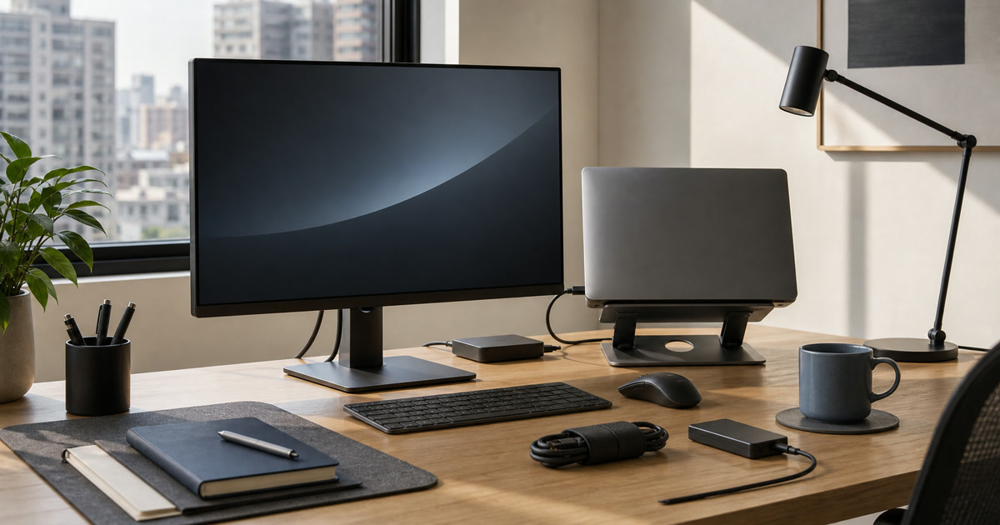

第二螢幕怎麼選：外接螢幕、筆電、支架與資料備份的工作配置
第二螢幕的價值在於工作動線，不是單純追求大尺寸；先看視窗數量、攜帶需求與資料備份。

第二螢幕常被當成提升效率的捷徑，但如果沒有先想清楚工作視窗、筆電高度、線材和資料備份，它很可能只是桌上更大的壓迫感。真正好的配置，是讓你少切換、少低頭、少找檔案，而不是把螢幕尺寸當成唯一答案。
先數你每天真正會開幾個視窗
如果你的工作只是單一文件與瀏覽器，第二螢幕未必需要很大；若是簡報、資料表、通訊軟體、研究頁面同時開啟，螢幕尺寸與比例才會明顯影響效率。
REAICE、華克電腦與日本橋3C 可放在外接螢幕、筆電與周邊整合中比較；本文不捏造效能測試或相容性。
Elite Fashion 編輯團隊的具體判斷是：先看工作視窗數量與攜帶需求，再談螢幕尺寸與筆電規格。 這讓 REAICE｜外接式螢幕、充電線材、3C周邊、華克電腦-高效筆電專賣平台、專業服務與精選方案 與其他選項能被放回同一個生活問題裡比較，而不是只看單一商品照片。
下單前仍要回商品頁確認規格、尺寸、材質、活動、庫存與配送；若資訊不足，先暫緩，比把不確定的物品帶回家更成熟。
- 先確認使用位置與拿取頻率。
- 再看保存、清潔、線材或收納條件。
- 最後才比較品牌、活動與預算。
筆電高度比很多人想得更重要
第二螢幕放得再好，如果筆電仍然太低，肩頸和視線會被迫一直切換。支架、外接鍵盤與滑鼠的位置，應該和螢幕一起規劃。
聯威電腦、Momax Taiwan 與 EZstick 可作為周邊、保護與線材補充參考；尺寸與相容性要回商品頁確認。
Elite Fashion 編輯團隊的具體判斷是：先看工作視窗數量與攜帶需求，再談螢幕尺寸與筆電規格。 這讓 REAICE｜外接式螢幕、充電線材、3C周邊、華克電腦-高效筆電專賣平台、專業服務與精選方案 與其他選項能被放回同一個生活問題裡比較，而不是只看單一商品照片。
下單前仍要回商品頁確認規格、尺寸、材質、活動、庫存與配送；若資訊不足，先暫緩，比把不確定的物品帶回家更成熟。
- 先確認使用位置與拿取頻率。
- 再看保存、清潔、線材或收納條件。
- 最後才比較品牌、活動與預算。
Elite 嚴選
備份不是最後才想的配件
工作桌升級很容易先看螢幕和支架，卻忘了資料備份。外接硬碟、雲端流程、線材與固定備份時間，才是讓工作配置不只好看而且可靠的關鍵。
任何容量、速度、保固和相容資訊都應以商品頁與官方說明為準。
Elite Fashion 編輯團隊的具體判斷是：先看工作視窗數量與攜帶需求，再談螢幕尺寸與筆電規格。 這讓 REAICE｜外接式螢幕、充電線材、3C周邊、華克電腦-高效筆電專賣平台、專業服務與精選方案 與其他選項能被放回同一個生活問題裡比較，而不是只看單一商品照片。
下單前仍要回商品頁確認規格、尺寸、材質、活動、庫存與配送；若資訊不足，先暫緩，比把不確定的物品帶回家更成熟。
- 先確認使用位置與拿取頻率。
- 再看保存、清潔、線材或收納條件。
- 最後才比較品牌、活動與預算。
線材要在購買前就畫進配置
螢幕、筆電、充電器、硬碟、鍵盤、滑鼠都需要線材或接收器。若沒有先安排走線，桌面很快會變成每天都要整理的地方。
下單前先確認接口、線長、桌洞、插座與轉接需求，不要等商品到貨才發現缺少關鍵線材。
Elite Fashion 編輯團隊的具體判斷是：先看工作視窗數量與攜帶需求，再談螢幕尺寸與筆電規格。 這讓 REAICE｜外接式螢幕、充電線材、3C周邊、華克電腦-高效筆電專賣平台、專業服務與精選方案 與其他選項能被放回同一個生活問題裡比較，而不是只看單一商品照片。
下單前仍要回商品頁確認規格、尺寸、材質、活動、庫存與配送；若資訊不足，先暫緩，比把不確定的物品帶回家更成熟。
- 先確認使用位置與拿取頻率。
- 再看保存、清潔、線材或收納條件。
- 最後才比較品牌、活動與預算。
常見錯誤：把規格當成效率
更大的螢幕、更高的解析度或更強的筆電，不一定會讓工作更順。若流程本身混亂，規格只會讓混亂變得更寬。
先列出每天最常切換的三個任務，再決定第二螢幕是否值得升級。
Elite Fashion 編輯團隊的具體判斷是：先看工作視窗數量與攜帶需求，再談螢幕尺寸與筆電規格。 這讓 REAICE｜外接式螢幕、充電線材、3C周邊、華克電腦-高效筆電專賣平台、專業服務與精選方案 與其他選項能被放回同一個生活問題裡比較，而不是只看單一商品照片。
下單前仍要回商品頁確認規格、尺寸、材質、活動、庫存與配送；若資訊不足，先暫緩，比把不確定的物品帶回家更成熟。
- 先確認使用位置與拿取頻率。
- 再看保存、清潔、線材或收納條件。
- 最後才比較品牌、活動與預算。
下單前的工作桌檢查
確認螢幕寬度、筆電高度、桌深、眼睛距離、資料備份位置和線材方向。這六件事比單看商品照更能決定是否會長期使用。
價格、規格、活動、保固、相容性與庫存請以下單前商品頁公告為準。
Elite Fashion 編輯團隊的具體判斷是：先看工作視窗數量與攜帶需求，再談螢幕尺寸與筆電規格。 這讓 REAICE｜外接式螢幕、充電線材、3C周邊、華克電腦-高效筆電專賣平台、專業服務與精選方案 與其他選項能被放回同一個生活問題裡比較，而不是只看單一商品照片。
下單前仍要回商品頁確認規格、尺寸、材質、活動、庫存與配送；若資訊不足，先暫緩，比把不確定的物品帶回家更成熟。
- 先確認使用位置與拿取頻率。
- 再看保存、清潔、線材或收納條件。
- 最後才比較品牌、活動與預算。
同主題品牌參考
FAQ
第二螢幕越大越好嗎？
不一定。要看桌深、視距、視窗數量與攜帶需求。過大反而可能壓縮桌面。
筆電支架一定要買嗎？
如果你長時間使用筆電螢幕，支架和外接鍵鼠通常更有利於視線安排；仍需看桌面空間。
資料備份要和螢幕一起規劃嗎？
建議一起規劃。工作配置若沒有備份和線材安排，容易只完成表面升級。
下一步建議
第二螢幕的價值在於工作動線，而不是單純追求大尺寸。 先用本文順序縮小範圍，再回商品頁確認規格、價格、活動與庫存。
重要警語
本文含品牌／商品導購連結；商品資訊、價格、規格、活動與庫存請以商品頁公告為準。不捏造效能測試、保固或相容性。
本文含品牌／商品導購連結；若你透過部分商品連結前往選購，Elite Fashion 可能取得合作收益。本文仍以編輯判斷與使用情境整理為主，價格、規格、活動與庫存請以商品頁公告為準。